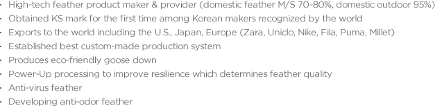
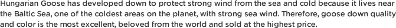
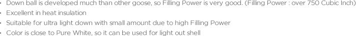
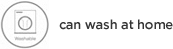

ÄÁÅÙÃ÷



- High-tech feather product maker & provider (domestic feather M/S 70~80%, domestic outdoor 95%)
- Obtained KS mark for the first time among Korean makers recognized by the world
- Exports to the world including the U.S., Japan, Europe (Zara, Uniclo, Nike, Fila, Puma, Millet)
- Established best custom-made production system
- Produces eco-friendly goose down
- Power-Up processing to improve resilience which determines feather quality
- Anti-virus feather
- Developing anti-odor feather



- Down ball is developed much than other goose, so Filling Power is very good. (Filling Power : over 750 Cubic Inch)
- Excellent in heat insulation
- Suitable for ultra light down with small amount due to high Filling Power
- Color is close to Pure White, so it can be used for light out shell
premium Hungarian Goose Pure White - threeFeature

- 